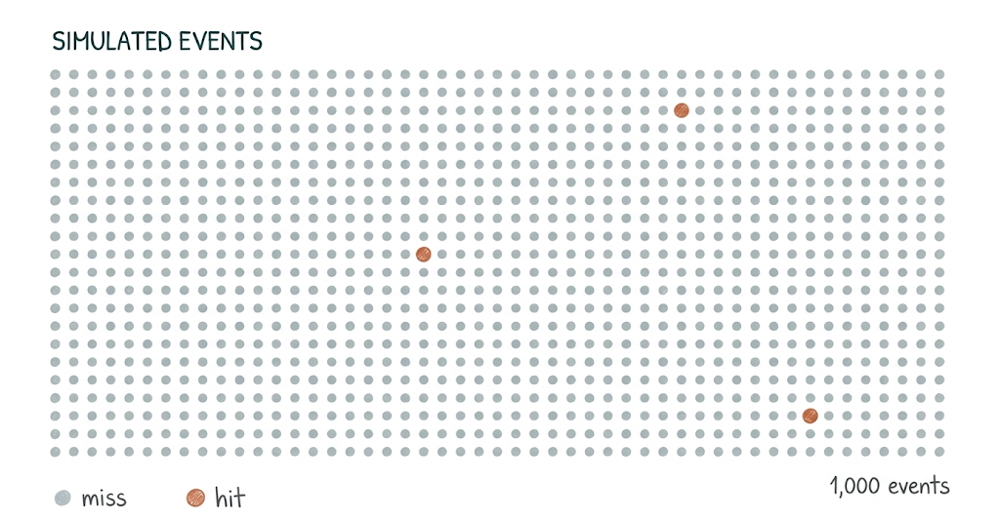
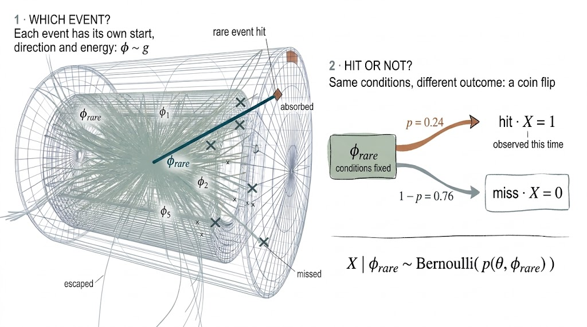
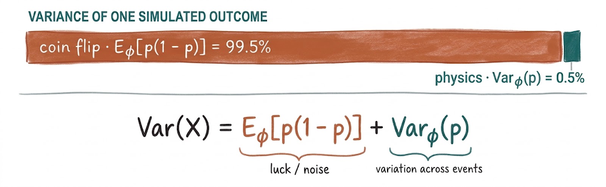
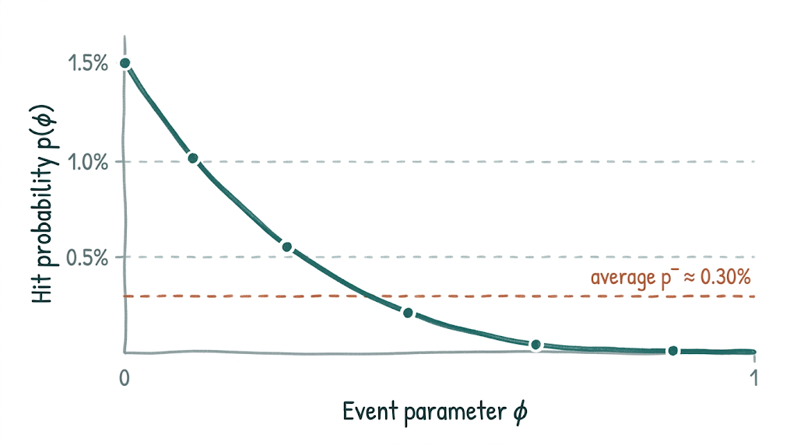

Rare-event probabilities are estimated by simulating many events and counting hits. With 3 hits in 1,000 events, the estimate is uncertain by about ±58%.
For rare events, that uncertainty is almost entirely luck: whether a given event happens to hit. Replacing each 0/1 outcome by its hit probability removes the luck and keeps the physics.
In a simple example, the error at 1,000 events drops from 58% to 3.9%, the same precision as about 218 times more events counted directly.
1 · The question
1,000 simulated events, 3 hits
What is the hit probability, and how well do we know it?
Searching for rare events is often described as looking for a needle in a haystack. In physics, finding one needle is rarely the goal. We want to know how many needles the haystack holds: how often the rare event happens, and how precisely we know it.
Many questions in physics come down to a small probability that has to be estimated by simulation: how often a background particle reaches the sensitive region of a detector, how often a simulated binary star ends up as a merging black-hole pair, how often a transient is bright enough to be detected. In each case, a simulation draws one event at a time and records whether it produced the outcome of interest, a hit, or not.
Suppose we simulate 1,000 events for one detector design and 3 of them produce a hit. The natural estimate is to count:
$$\hat{p}_{\text{count}} = \frac{m}{N} = \frac{1}{N}\sum_{i=1}^{N} X_i = \frac{3}{1000}$$
Each simulated event contributes either 1 (hit) or 0 (miss).

The relative error of a count of \(m\) hits is roughly \(1/\sqrt{m}\), so three hits give about ±58%. Yet the simulation knows much more than this: for every one of the 997 misses, we still know where the particle started, in which direction it moved, and with what energy. Counting ignores all of it.
In the haystack picture, we have searched 1,000 straws, found three needles and kept only the tally. Whatever the other 997 straws could tell us about how close each came to being a needle is thrown away.
2 · The compute bottleneck
Why counting is expensive
The rarer the event, the more simulation each digit of precision costs.
If each simulated event has probability \(p\) of producing a hit, \(N\) events yield about \(Np\) hits, and the relative error is about \(1/\sqrt{Np}\). Reaching a target error \(\varepsilon\) therefore takes
$$\varepsilon \approx \frac{1}{\sqrt{Np}} \quad\Longrightarrow\quad N \approx \frac{1}{p\,\varepsilon^{2}}$$
Put differently, a 1% error takes about \(1/\varepsilon^{2} = 10{,}000\) hits, however rare they are. The rarer the needle, the more hay has to be searched to find that many.
For \(p = 10^{-6}\), a 1% error needs \(10^{10}\) simulated events for a single detector design. Comparing 100 designs needs \(10^{12}\). At 0.01 CPU-seconds per event, that is \(10^{10}\) CPU-seconds: about 3.2 years on 100 cores. Design studies stop being iterative and become compute-bound.
This is not a niche problem. Rare-event rates enter forecasts across physics and astronomy, and the precision of those forecasts shapes real decisions.
The Vera C. Rubin Observatory will repeatedly image the southern sky during a ten-year survey. Among the brief transients it looks for are kilonovae: optical and infrared flashes from the merger of two neutron stars. Their light fades within days, so whether one is detected depends on its brightness and distance, and on when and how often that patch of sky is observed. One Rubin simulation study forecasts about 42 ± 4 detections per year; only 7–11% of its simulated light curves pass a stricter alert criterion. Estimates like these rest on simulating very many sources, of which only a small fraction count as detections.
In underground searches for rare decays and dark matter, simulations estimate how often background processes produce events that look like the signal. A background estimate that is too low makes the projected sensitivity look better than the experiment will achieve; one that is too high makes it unnecessarily pessimistic. Either can steer choices of materials, shielding and geometry that are expensive to change once built. In a simple background-dominated counting model, the significance scales as \(S/\sqrt{B}\): if the true background is four times the estimate, the same signal is only about half as significant.
Across these very different problems, the cost of counting grows the same way:

3 · Probability model
Two steps per event
Every simulated event is a random choice of starting conditions, followed by a coin flip.
For a fixed detector design \(\theta\), each simulated event happens in two steps:
- Which event? The simulation samples the event conditions \(\phi\) (start position, direction, energy) from a distribution \(g\).
- Hit or not? Given those conditions, the particle either produces a hit (\(X = 1\)) or not (\(X = 0\)). This is a coin flip with probability \(p(\theta, \phi)\).
The quantity we want is the hit probability averaged over all event conditions, \(\bar{p}(\theta)\).

| \(\theta\) | Detector design: geometry and materials. Fixed throughout. |
|---|---|
| \(\phi \sim g\) | Event conditions, sampled from the distribution \(g\). |
| \(X \in \{0,1\}\) | Whether this simulated event produced a hit. |
| \(p(\theta, \phi)\) | Hit probability for these event conditions. |
| \(\bar{p}(\theta)\) | Overall hit probability, averaged over \(\phi\). |
4 · Variance decomposition
Where the noise comes from
For rare events, the noise is almost entirely luck, not physics.
The two steps contribute two different kinds of randomness. The law of total variance separates them exactly:

When every hit probability is small, the first term is close to the overall hit probability \(\bar{p}\), because \(p(1-p) \approx p\). The second term is much smaller: since \(p^2 \le p_{\max}\, p\) for every event, \(\mathrm{Var}_{\phi}(p) \le \mathbb{E}_{\phi}[p^2] \le p_{\max}\,\bar{p},\) where \(p_{\max}\) is the largest hit probability of any single event. If no event has more than a few percent chance of hitting, the physics term is at most a few percent of the coin-flip term. The coin flip therefore dominates: almost all of the counting error comes from which individual events happened to hit, not from how the hit probability varies with the physics.
5 · Conditional Monte Carlo
Average hit probabilities instead of counting hits
If we know each event’s hit probability, we no longer need the coin flip.
Replace each observed outcome \(X_i\) by its expected value given the event conditions, \(\beta_i = \mathbb{E}[X_i \mid \phi_i] = p(\theta, \phi_i)\), and average those instead. Both estimators use exactly the same simulated events:

Direct counting
$$\hat{p}_{\text{count}} = \frac{1}{N}\sum_{i=1}^{N} X_i$$
Average the observed 0/1 outcomes.
Conditional Monte Carlo
$$\hat{p}_{\text{CMC}} = \frac{1}{N}\sum_{i=1}^{N} \beta_i$$
Average the hit probabilities of the same events.
The idea is not new to particle transport: next-event estimators in transport codes score the probability that a particle would reach a detector, rather than waiting for it to arrive. Two short arguments show why it works.
Same mean
$$\mathbb{E}[\beta_i] = \mathbb{E}_{\phi}\big[\mathbb{E}(X_i \mid \phi_i)\big] = \mathbb{E}[X] = \bar{p}$$
Averaging the conditional averages gives the overall average (the tower rule). This is exact, so the estimator is unbiased.
Smaller variance
$$\mathrm{Var}(\hat{p}_{\text{CMC}}) = \frac{\mathrm{Var}_{\phi}(p)}{N} = \mathrm{Var}(\hat{p}_{\text{count}}) - \frac{\mathbb{E}_{\phi}[p(1-p)]}{N}$$
The coin-flip term is removed exactly. What remains is the genuine event-to-event spread.
This is a special case of the Rao–Blackwell theorem: conditioning an estimator on available information never increases its variance and leaves its mean unchanged. The gain vanishes only if the event conditions already determine the outcome, so that every \(p(\theta, \phi)\) is 0 or 1.
6 · Example
How large is the gain?
The rarer the hits, the larger the gain.
Take a toy model where the event condition \(\phi\) is uniform between 0 and 1 and the hit probability falls from 1.5% to almost zero: \(p(\phi) = 1.5\%\cdot e^{-5\phi}\). Its average is \(\bar{p} \approx 0.30\%\), close to the 3-in-1,000 example above. Because \(p(\phi)\) is known exactly here, the gain can be calculated without any learned model.

Same number of simulated events
Expected relative statistical error
At 1,000 events, both estimators see the same expected number of hits: about 3.
How large the gain is depends mainly on the largest hit probability of any single event, \(p_{\max}\):
$$\frac{\mathrm{Var}(\hat{p}_{\text{CMC}})}{\mathrm{Var}(\hat{p}_{\text{count}})} = \frac{\mathrm{Var}_{\phi}(p)}{\bar{p}(1-\bar{p})} \le \frac{p_{\max}}{1-\bar{p}} \approx p_{\max}$$
If no event has more than a few percent chance of hitting, the variance falls by a factor of tens to hundreds.
7 · Probability learning
Learning the hit probability
The catch: \(p(\theta, \phi)\) is unknown. A neural network can learn it.
A single simulation run returns one hit or miss, never a probability. But a network trained on many simulated events, with their conditions as input and the 0/1 outcome as label, can estimate the probability. The reason is a property of the binary cross-entropy loss: for inputs where the true hit probability is \(p\), the expected loss of a prediction \(r\) is smallest exactly at \(r = p\).
$$L(r) = -p\log r - (1-p)\log(1-r)$$
$$\arg\min_{r} L(r) = p = \mathbb{E}[X \mid \theta, \phi]$$
The loss is minimized by the conditional hit probability: exactly the quantity conditional Monte Carlo needs.
This is the starting point of RESuM, a rare-event surrogate model we developed for detector design, which combines a learned event-level probability with a multi-fidelity model across cheap and expensive simulations.
8 · Validation
What has to be checked
The guarantee holds for the exact probability; a learned one has to be validated.
With the exact hit probability, conditional Monte Carlo is unbiased and never noisier than counting. A network only approximates that probability: limited training data, too few hits in the rare tail, or a mismatch between training and target conditions can leave it biased or miscalibrated. Errors in a learned probability show up as bias, not as noise, so a small spread across repeated estimates does not prove the result is correct. A learned probability has to be checked for calibration on independent simulations, and its error reported separately from the statistical error of the average.
References
Methods and context
- Rao, C. R. (1945). “Information and accuracy attainable in the estimation of statistical parameters.”Bulletin of the Calcutta Mathematical Society, 37(3), 81–91.
- Blackwell, D. (1947). “Conditional expectation and unbiased sequential estimation.”Annals of Mathematical Statistics, 18(1), 105–110.
- Gneiting, T. & Raftery, A. E. (2007). “Strictly proper scoring rules, prediction, and estimation.”Journal of the American Statistical Association, 102(477), 359–378.
- Schuetz, A.-K., Poon, A. W. P. & Li, A. (2025). “RESuM: A Rare Event Surrogate Model for Physics Detector Design.”International Conference on Learning Representations (ICLR).
- Vera C. Rubin Observatory. “The Legacy Survey of Space and Time.”Survey overview and planned ten-year observing program.
- Rubin Observatory kilonova detection study (2025).Simulation-based kilonova yield estimates, including the dependence on the alert criterion.
The plotted simulation counts are study-specific estimates, not observed event counts or full sensitivity forecasts. The CPU-time figures above are an arithmetic illustration, not a benchmark.